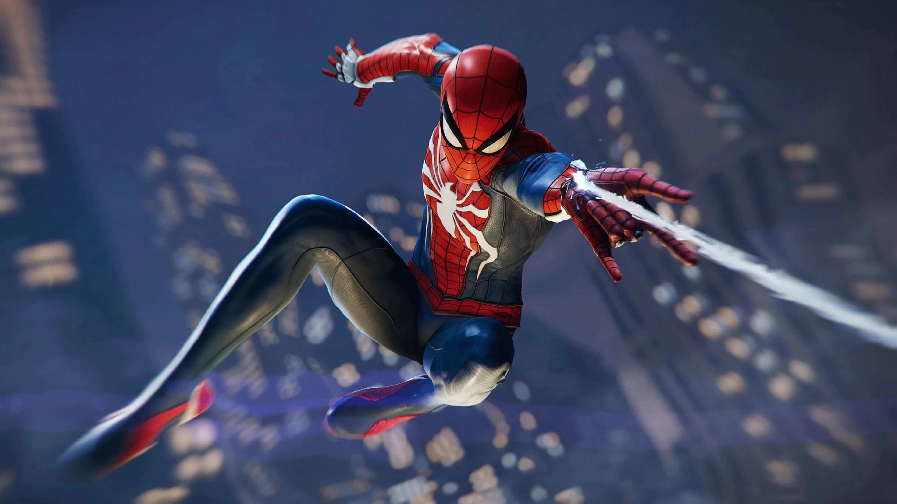

The World of PlayStation Accessories
PS1
Final Fantasy VII

First released on the PS1 in 1997, it is one of the most influential and iconic JRPGS of all time in gaming history. It was the first game in its series to feature 3D graphics, cutscenes, and use of pre-rendered backgrounds. The compelling story, along with its immersive gameplay for its era helped to define it as one of the best the PS1 had to offer.
Set in a dystopian world, Final Fantasy VII follows Cloud Strife, a former soldier-turned-mercenary who joins a rebel group called AVALANCHE to fight against the Shinra Corporation, a company exploiting the planet's resources for profit. As the story unfolds, Cloud and his companions face a greater threat in Sephiroth, a powerful and enigmatic antagonist with plans to destroy the world. The game's narrative explores deep themes like identity, environmentalism, and loss, making it resonate with players on an emotional level.
The gameplay had involved turn-based combat, with a magic Materia system that let players customize their team's ability set and forced players to better strategize for tough battles. The game featured a vast open world, the first of its kind for gaming in this era. This game managed to sell well over 13 million copies worldwide, making it the stable of its genre for JRPGs.
PS2
GTA: San Andreas

Grand Theft Auto: San Andreas was released on the PS2 back in 2004, and quickly became one of the most critically acclaimed games on its console. It is based on the fictional state of San Andreas. The game is a open-world, action game, with plenty of diverse locations to explore.
As the main character, CJ, the players are set to explore the narrative of gang warfare, betrayal, and corruption in the game's story. The game is filled with open-world activities for the players to engage in, such as street racing, gambling, and customizing cars.
Thanks to its massive open-world, San Andreas easily became a big hit on the PS2 and sold well over 27.5 million copies worldwide.
PS3
The Last of Us

Released back in 2013, this highly acclaimed action-narrative game, developed by Naughty Dog, made its way as one of the best single-player story games of all time. Set in a post-apocalyptic zombie world, the game follows the protagonist, Joel Miller, an old, hardened smuggler, and a young girl, Ellie, in which holds the key to humanity's survival in this world. The game's immersive narrative and environments helped to define the game as one of the best the PS3 had to offer.
Gameplay involves the use of stealth, fist and gun combat, and exploration, as players need to wisely make use of their limited supplies, as ammo and other materials are hard to come by in this ravaged world. The game heavily emphasizes you to manage your resources carefully and to make plans on how to approach a deadly situation in the game. Do you choose to go out guns blazing, risking all your limited ammo, or do you choose to stealthily approach enemies, saving what limited resources you have. This game's emotional storytelling and immersive environments paved new standards for narrative-driven games.
PS4
Marvel's Spider-Man
Released in 2018 for the PS4, this became one of the most hyped and anticipated games of the PS4 era. The game shows the adventures and Peter Parker, and his life struggles of being Spider-Man, as he as to balance his personal and superhero life. This game offers a massive open world of New York City, allowing you to swing through the streets of the city and fight off crime
The narrative of the game explores Peter's struggles and introduces a fresh new take on Spider-Man, starting off with an already experienced Spider-Man who has been fighting off crime for 8 years.
The gameplay involves fast-paced combat, exploration, and most importantly, fast web-swinging traversal. Use gadgets to help in battles and engage in plenty of side-missions to attain collectibles. The game also offers customizable outfits, allowing players to get different costumes for Spider-Man, many of which are brought straight from the comics
Marvel's Spider-Man was praised for its engaging story, impressive graphics, and dynamic gameplay. The game's portrayal of Spider-Man and New York City was widely celebrated for its attention to detail and authenticity. It became one of the best-selling PlayStation 4 games, selling over 13 million copies by early 2020.
PS5
God of War: Ragnarok

Released in 2022, this highly acclaimed sequel gained many fans and recognition for its story-driven action. Developed by Santa Monica Studio, the game continues the story of Kratos, the former Greek god, and his son Atreus, as they navigate the tumultuous world of Norse mythology. Set against the backdrop of the impending apocalypse known as Ragnarök, the game delivers an epic narrative filled with intense combat, complex characters, and a richly detailed world.
The graphics of the game showcase the power of the PS5, showing off highly detailed character models, beautiful environments, and dynamic lighting that helps to bring the world to life. There is great voice acting and cinematic presentation, helping to create an immersive world for the player to enjoy.
God of War Ragnarök received widespread acclaim for its compelling story, refined gameplay, and visual splendor. It became a major success for the PS5, selling millions of copies and earning numerous awards for its excellence in gaming. As a key title in the PlayStation 5's lineup, it solidifies the God of War series' reputation as one of the most influential and celebrated franchises in gaming history.